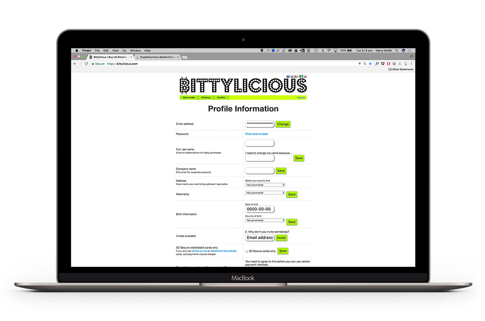
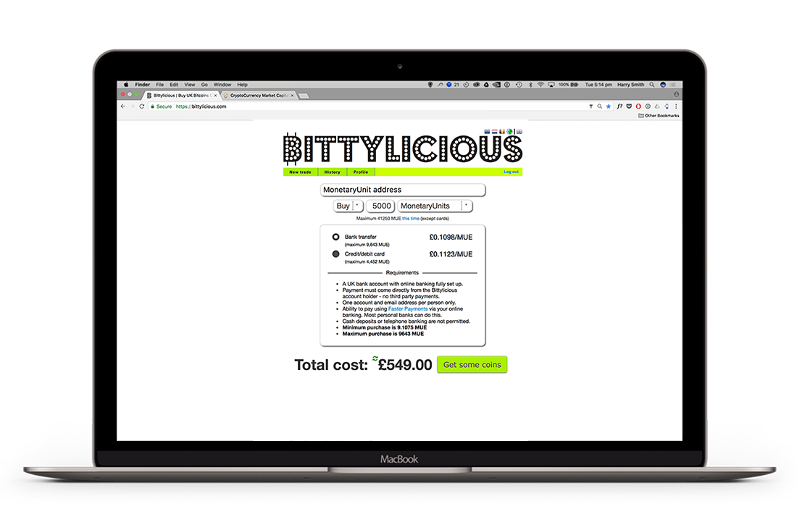

Download Your Wallet
Monetary Unit
Getting Started Guides
A series of short guides to help you get the most out of our digital currency.
For Consumers
If you're new to digital currencies or don't own any yet, the easiest route to buying MUE is through an exchange website such as Bittylicious. Their website allows to you purchase digital currencies with pounds. Once you have your wallet setup and have verified your account with them, it's a fast and simple process.
We currently recommend Bittylicious for their excellent feedback on  .
.
You can also purchase directly on: Bittrex.
Get 150% bonus when opening a new account at our Forex trading platform: muex.io/Forex.
or use one of our online merchants.
Download your wallet
Wallets store your digital currencies. Just install them on your preferred device and wait for them to sync up with the network. You could also choose to use one of our secure online at webwallets.io
If you haven't already set up your wallet, use the button below to crack on.
Download wallet nowThe first time you load your wallet, it may take a while to sync. Don't worry, it only happens once!

Your could also use our secure online wallet webwallets.io
Get verified on Bittylicious
Bittylicious is a great option to quicky purchase MUE.
So head on over there, register an account, verify your email address and then log in and visit your profile.
For higher transaction amounts you'll need to enter your information to pass a few security checks. This will involve uploading identity documents. For more assistance, visit their helpful wiki.
You can still make anonymous purchases but the amount you can buy is severely reduced without verification.
Once you've submitted your documents, you should hear back shortly.
Find your receiving address
Your wallets address allows you to receive transactions from elsewhere and is what you'll use to send Monetary Unit to yourself from Bittylicious.
In the desktop wallet this can be found under:
File > Receiving Addresses
Copy your wallet address carefully!
Order your MUE
Go to the Bittylicious homepage and make you're logged in and verified.
Select 'buy', enter your amount and most importantly ensure you choose Monetary Unit from the currency dropdown.
When ready, select 'get some coins' and enter your payment details. Job done!
Always double check your address has been copied correctly into Bittylicious!
You'll be notified of the progress of the transaction and should receive your payment within minutes.
Was this guide helpful?
If this guide needs improving or you would like assistance with something else, let us know. Keep in touch with all the news and chat to the team via our social channels, communication tools and open source developer networks.
Discover More
For Investors
Find out moreMUE has shown consistent growth since launch in July 2014. Can you miss out on the opportunity for a sound and reliable investment?
For Consumers
Find out moreBuying and spending with MUE is easier than you think. Download a wallet and find retailers and other spending touch points here.
For Merchants
Find out moreEnhance your ecommerce solution by allowing customers to pay using MUE currency payments. Let us show you how.
For Developers
Find out moreFor the tech savvy amongst you to start making your own MUE we can show you the coin specs and get you going.